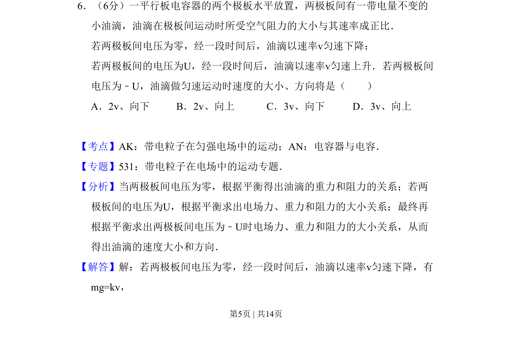
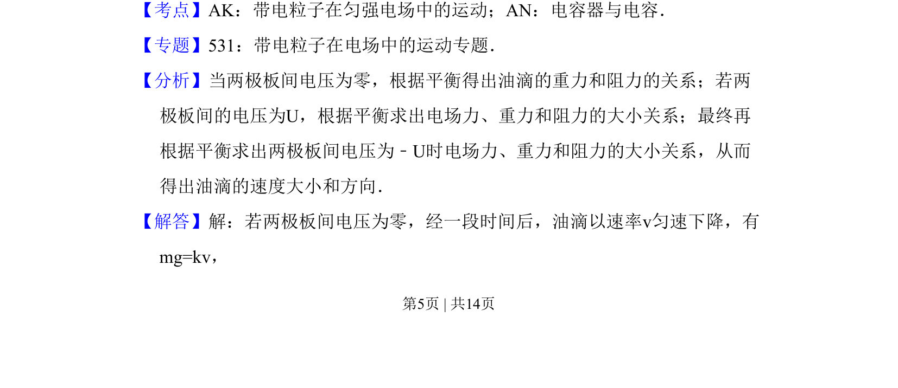
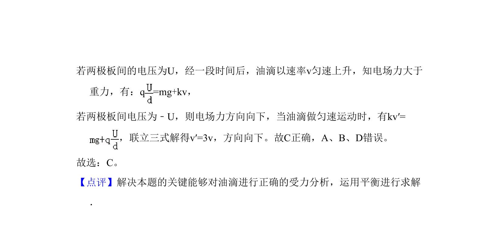

考点：带电粒子在匀强电场中的运动 平衡条件 电容器 阻力与速度成正比
带电粒子在匀强电场中的运动
平衡条件
电容器
阻力与速度成正比

油滴在平行板电容器电场、重力与空气阻力作用下多次匀速运动，分析平衡条件求速度。


📄 原 PDF 第 5 页：素材/真题/吉林/2008-2024·（吉林）物理高考真题/2008年高考物理试卷（全国卷Ⅱ）（解析卷）.pdf
素材/真题/吉林/2008-2024·（吉林）物理高考真题/2008年高考物理试卷（全国卷Ⅱ）（解析卷）.pdf